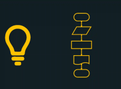
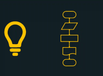

Olá, Fulano
Seja bem-vindos(a) ao Informatitchology.
Curso
Noticias
Contato
Bem-vindo(a) ao aplicativo de cursos da área de Tecnologia da Informação, na
qual irá aprender sobre as tecnologias emergentes do mercado de trabalho.
Aqui você ira encontrar cursos sobre programação, redes, design, projetos,
engenharia de software, inteligencia artificial e muito mais.
Explore os links e navegue conosco nesta jornada de aprendizado
O que é tecnologia da Informação?
A Tecnologia da Informação (TI) é um dos pilares fundamentais da era
digital, desempenhando um papel estratégico na inovação, automação e
otimização de processos em empresas e na sociedade.
Roadmap Para Aprender Programação: O Caminho Certo Para se Tornar um
Programador
Um roadmap define quais habilidades e tecnologias devem ser aprendidas
primeiro, organizando o conhecimento. Quando alguém começa a estudar
programação sem um roteiro, há grandes chances de pular etapas
importantes ou focar em conteúdos avançados sem ter uma base sólida.

 

O que é linguagem Portugol? Guia Definitivo
O primeiro passo no aprendizado de programação é dominar o que chamamos
de ‘Lógica’. Uma das ferramentas mais utilizadas para ensinar lógica de
programação é a Linguagem Portugol.
Saiba mais
Saiba mais
Saiba mais

Criado por:
Gustavo Porto